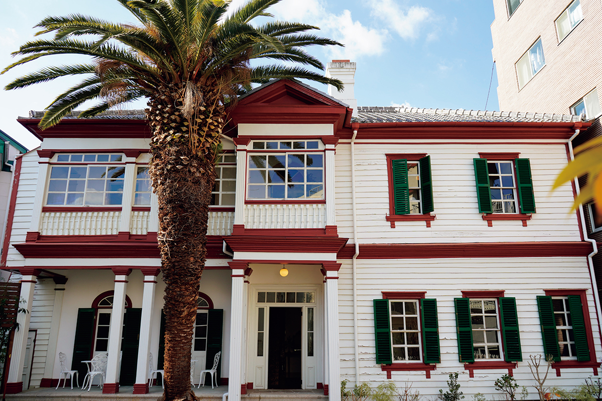
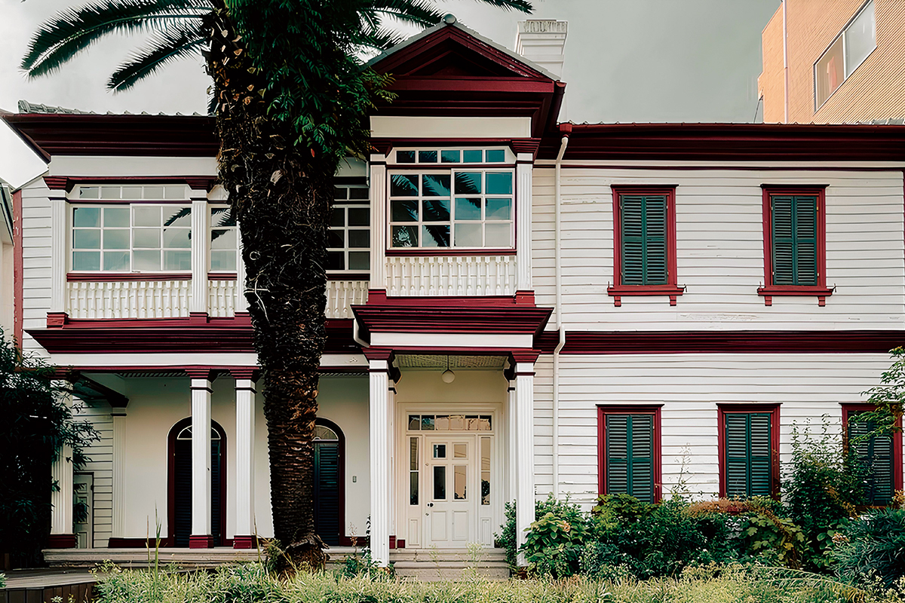
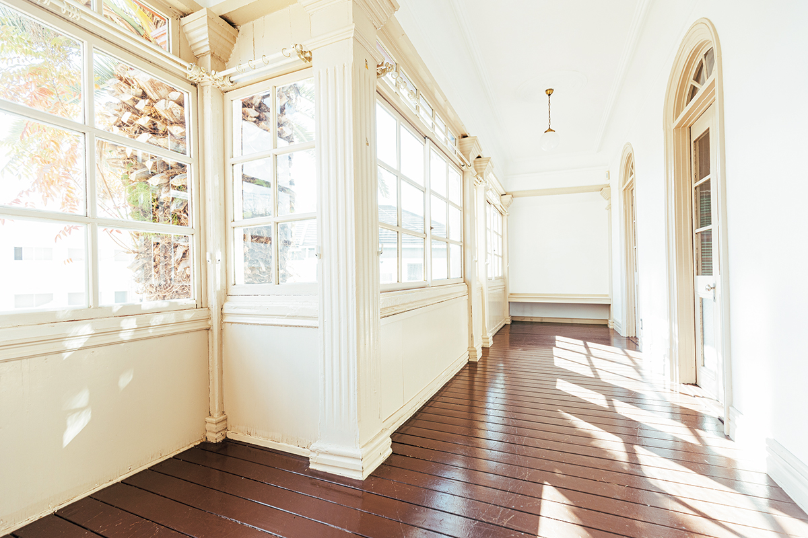
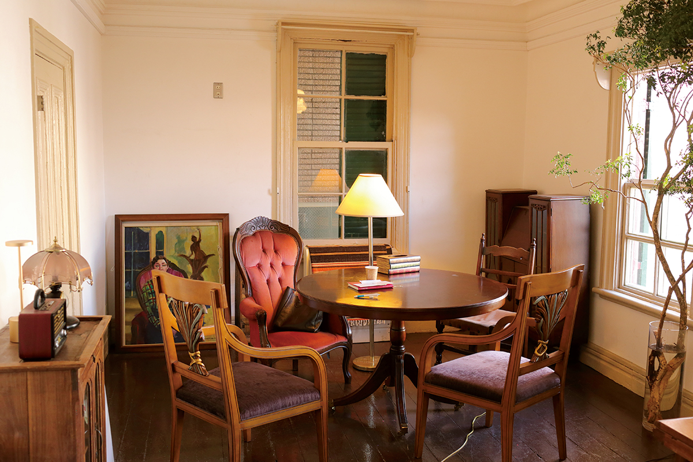
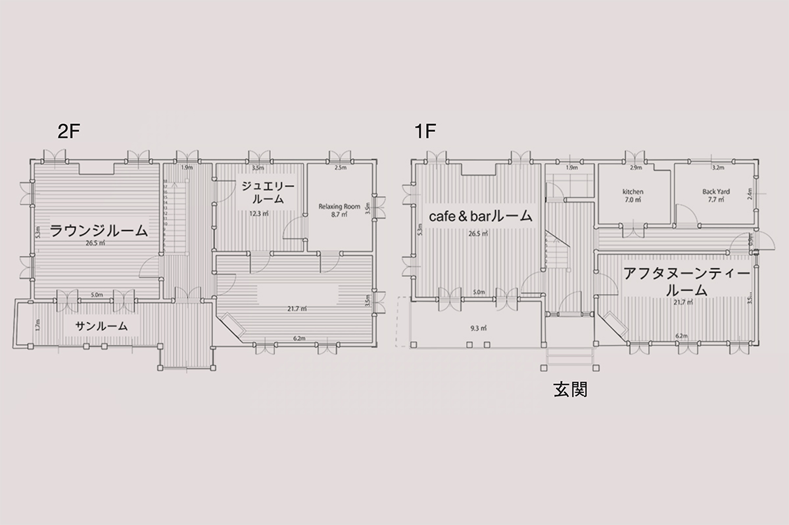
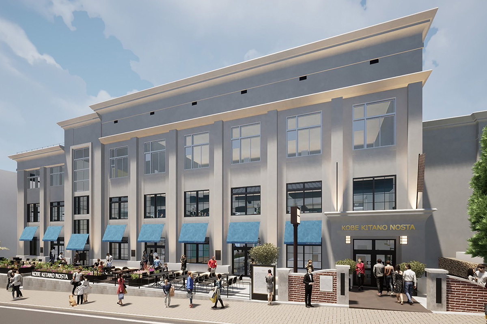
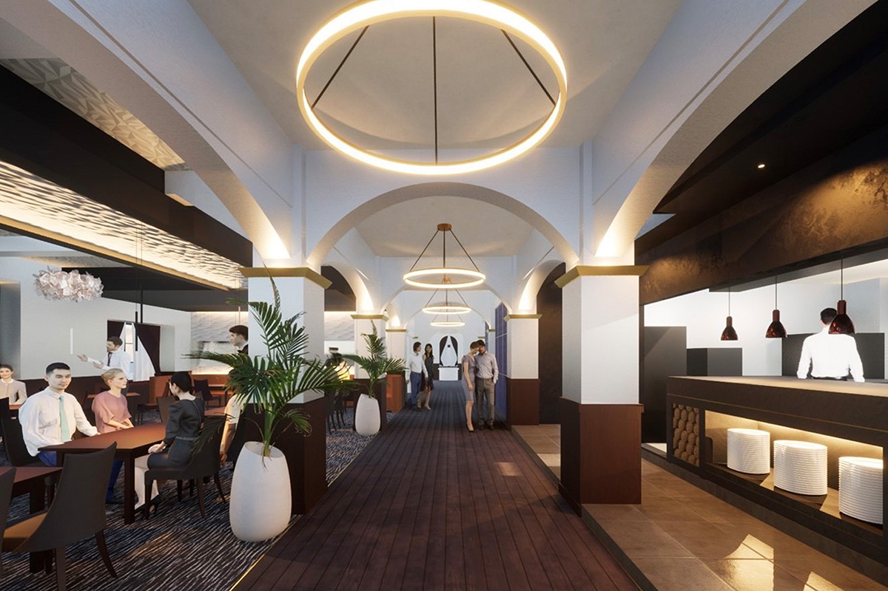
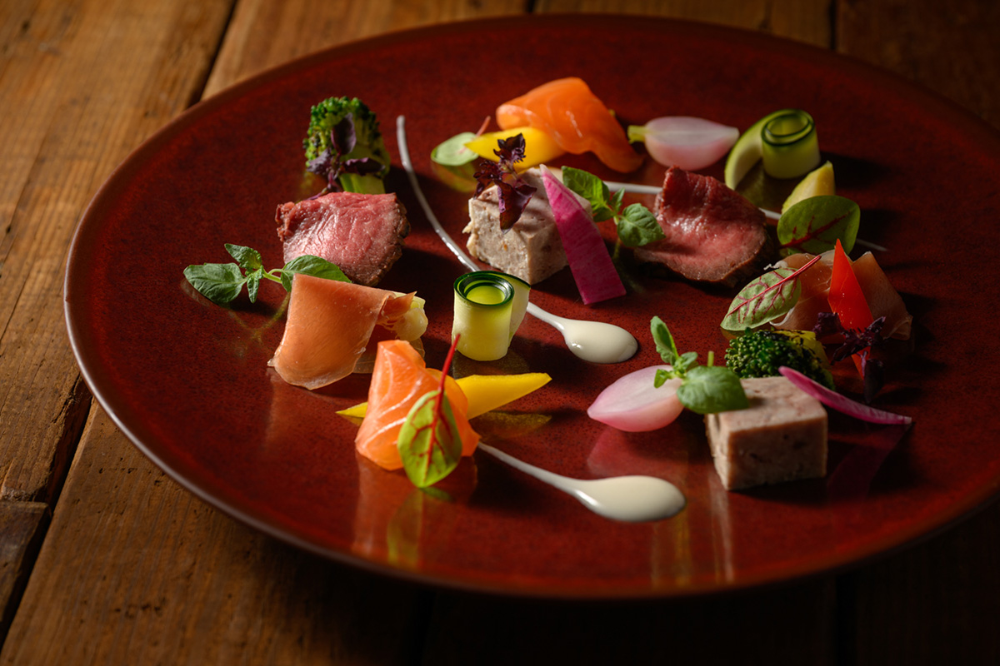

Префектура Хёго · Кобе, Китано · архитектура и еда
Китано в Кобе: старейший дом иностранцев и бывшая школа, ставшая гастрономическим центром

Китано, холмистый квартал над портом Кобе, в конце XIX века заселили иностранные купцы и моряки. Их дома стоят здесь до сих пор, и некоторые из них нашли себе новое дело: в старом деревянном особняке сегодня пьют чай, а в здании закрытой школы обедают.
Квартал
Почему иностранцы жили на холме
Улицу Ямамото-дори в районе Тюо города Кобе часто называют улицей домов иностранцев. Особняк «Китано Мэдиум» стоит именно здесь, и само название звучит так же экзотично, как выглядит вся округа.
Порт Кобе открылся для иностранцев в 1868 году. Сначала они жили в отведённом им сеттльменте у моря, но места там не хватало, и власти разрешили селиться за его пределами, в смешанных кварталах вместе с японцами. Работавшие в порту иностранцы выбирали склоны гор, откуда видно море, и с середины эпохи Мэйдзи, то есть примерно с 1890-х годов, центр их жизни переместился на холм Китано. Покупать землю им не позволяли, зато дома можно было перестраивать. Так вдоль крутых улочек выросли особняки людей разных стран и культур.
Особняк
«Китано Мэдиум»: дом русского купца
Белёные дощатые стены, зелёные рамы, печные трубы на крыше. В облике «Китано Мэдиум» есть всё, что принято представлять себе при словах «дом иностранца». Средняя часть фасада чуть выступает вперёд: она задаёт парадность и придаёт всему зданию спокойный порядок. Сквозь множество слоёв краски кое-где проступает дерево, и по нему видно, что домом пользовались непрерывно.

Точный год постройки неизвестен: в одних данных это около 1885 года, в других конец 1880-х годов. Считается, что здесь жили супруги Стаденик, русский торговец с женой, и что это один из самых старых домов во всём квартале Китано. В 1980 году город Кобе признал особняк традиционной постройкой. Нынешнее имя дом получил в 2022 году, когда его, долго пустовавший, привели в порядок и снова открыли. Слово «медиум» означает посредника, который передаёт ценности и мысли, а в искусстве так называют основу, на которой держится произведение. Владельцы хотели, чтобы дом, которому больше 130 лет, связывал людей друг с другом и прошлое с будущим.
За входной дверью сразу видна лестница на второй этаж. Перила и опорные столбы украшены плавными изгибами. В каждой комнате есть камин, а за ним выступ, уходящий к дымоходу, и мягкие линии там, где он переходит в потолок, оживляют пространство. Окна высокие, подъёмные, как было принято в западных домах. Дверь в залитую светом солнечную комнату сделана аркой и словно соединяет дом с улицей.

Сегодня
Кафе, послеобеденный чай и залы для встреч
Сейчас в «Китано Мэдиум» работают кафе и салон послеобеденного чая, а часть комнат сдают под мероприятия. Здесь собираются участники клуба для деловых людей, устраивают вечеринки и фотосессии.

Дом пережил много ролей и, меняя их, переходил из одной эпохи в другую. «Китано Мэдиум» принимает всю историю, которую накопили слова «дом иностранца», и встраивает её в сегодняшнюю жизнь. Особняк на южном склоне передаёт будущему время, которое прожил квартал Китано.

Особняк «Китано Мэдиум»
- Адрес
- префектура Хёго, Кобе, район Тюо, Ямамото-дори, 2-9-19
- Телефон
- +81 78-855-3900
- Часы работы
- 11:00–18:00
- Выходные
- нерегулярно
- Цены / Вход
- вход свободный, кафе и аренда залов платные
- Сайт
- mediumtei.com
Еда
«Кобэ Китано Носута»: школа, где теперь обедают
Совсем рядом, в здании бывшей начальной школы Китано, закрытой в 1996 году, работает гастрономический центр «Кобэ Китано Носута» (Kobe Kitano Nosta). Он открылся в ноябре 2024 года и собрал под одной крышей кафе и рестораны, где готовят из продуктов Кобе и всей префектуры.

Старое школьное здание с его модерновыми чертами, характерными для Кобе, например коридорами с арочными сводами, бережно перестроили. По всему центру напоминают о том, что порт принёс в город множество культур, и о прошлой жизни дома: сохранились школьные столбы ворот и люстры, выставлены работы выпускников.

Заведения центра готовят собственные блюда из продуктов Кобе и Хёго, придумывают меню вместе с местными компаниями и друг с другом. При открытии здесь планировалось семь заведений: кафе с сезонными десертами, где подают сэндвичи из панкейков, обжарочная кофейня, ресторан с блюдами из говядины Кобе и других продуктов пяти исторических областей Хёго.

Создатели центра называют его общим столом, за которым встречаются старое и новое, разные культуры. Их цель сохранить собственную кухню Кобе и дать ей развиваться дальше.
«Кобэ Китано Носута»
- Адрес
- префектура Хёго, Кобе, район Тюо, Накаямате-дори, 3-17-1
- Телефон
- +81 78-891-6442 (общая справка)
- Часы работы
- 8:00–23:00
- Выходные
- новогодние праздники